Kurzbeschreibung
Stark von "Ultimate Chicken Horse" inspiriert, in diesem Prototyp versucht jeder Spieler das Ziel des Levels zu erreichen indem sie zwischen den Runden neue Blöcke dem Level hinzufügen und so neue Wege errichten oder Mitspieler sabotieren. Hauptfokus dieses Projektes ist es zu lernen stabile Multiplayer-Systeme zu erschaffen.
Hintergrund
Viele Spiele die mir gefallen sind vor allem deshalb so gut, weil sie im Multiplayer spielbar sind. Von Spielen wie "Ultimate Chicken Horse" und "R.V. There Yet?", die aus genau diesem Grund sehr spaßig sind, inspiriert, entschied ich mich dazu zu lernen wie Multiplayer-Systeme in Unreal Engine 5 eingerichtet werden. Ich nahm an dass ein Spiel wie "Ultimate Chicken Horse" recht einfach umzusetzen sein sollte. Ich konnte bereits in sehr wenigen Wochen Entwicklung sehr aufregende Ergebnisse erreichen. Der Game-Loop (Lauf-Runde:Jeder Spieler 1 Versuch ins Ziel zu kommen -> Dann Bau-Runde -> Lauf-Runde -> usw.) funktioniert bereits problemlos. Die online-Spiele Verbindung funktioniert auch bereits. Spieler können über Steam dem Spiel des anderen Spielers beitreten.
Spielablauf
- Lauf-Runde: Jeder Spieler versucht das Ziel des Levels zu erreichen. Erreicht ein Spieler das Ziel, erhält dieser Spieler Punkte. Wird ein Spieler besiegt (z.B. durch das Fallen in Stacheln), erhält dieser Spieler keine Punkte, wenn die Runde endet. Sind alle Spieler im Ziel oder besiegt, endet die Lauf-Runde und der Runden-Rückbklick Bildschirm erscheint.
- Bau-Runde: Jeder Spieler muss in dieser Runde einen neuen Block dem Level hinzufügen. Aktuell hat noch jeder Spieler die Auswahl über alle aktuell verfügbaren Blöcke, dies steht in Planung bald geändert zu werden. Hat jeder Spieler seinen Block platziert, beginnt die nächste Lauf-Runde.
- Der Spieler der zu erst X-Punkte erreicht hat, gewinnt das Spiel. Die Anzahl der benötigten Punkte soll vor dem Start des Spieles einstellbar sein, Standard-Anzahl der Runden sollte wahrscheinlich bei ~8 liegen. Punkte-Zählung und Limit ist noch nicht implementiert.
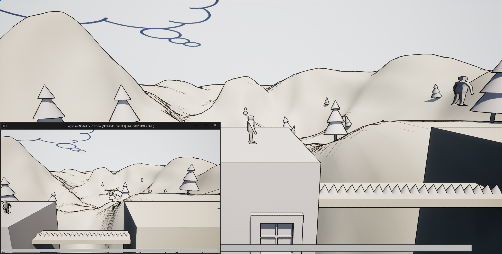
Lauf-Runde
Jeder Spieler hat einen Versuch das Ziel des Levels zu erreichen!
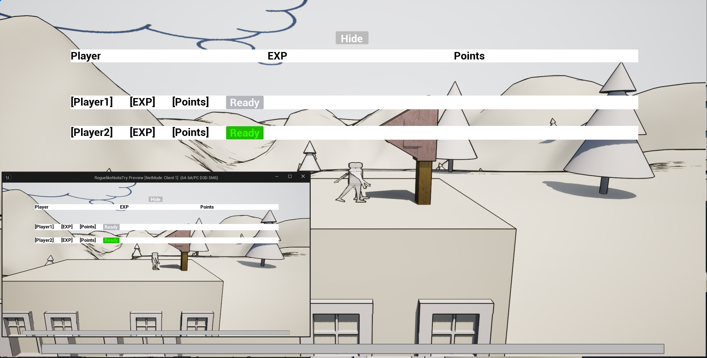
Runden-Rückblick Bildschirm
Hier wird der neue Punktestand angezeigt und welcher Spieler wie viel Punkte in dieser Runde gesammelt hat. Jeder Spieler muss auf "Ready" klicken damit die Bau-Runde beginnt.
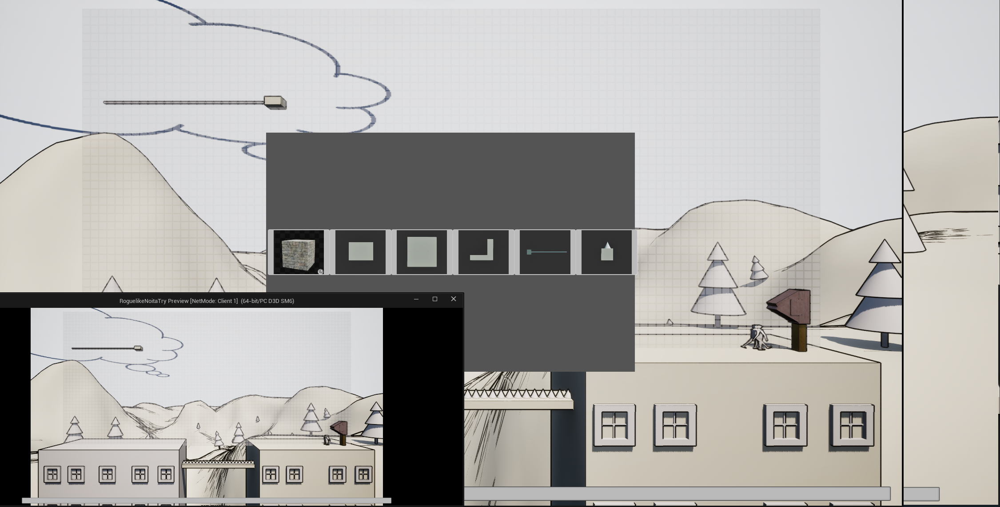
Bau-Runde
Jeder Spieler platziert einen neuen Block im Level! Sobald alle Spieler ihren Block platziert haben, beginnt die nächsteLauf-Runde
Beispiel: Level-Veränderung bei Runde 4
Hier ist das Ausmaß der Level-Veränderungen bei Runde 4 zu sehen. Aus einem simplen Level können sehr komplexe und schwere Level entstehen!
- Entwicklung & Technik -
Technische Details
- Engine: Unreal Engine (Blueprints / Visual Scripting)
- Source Control: GitHub.
- Entwicklungszeit: 3 Wochen
- Solo Projekt
- Online Verbindungs-Service: Steam
Implementierte Blöcke
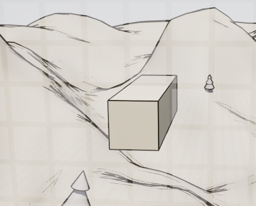
1x1-Block
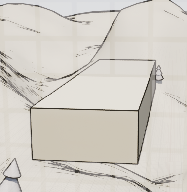
1x2-Block
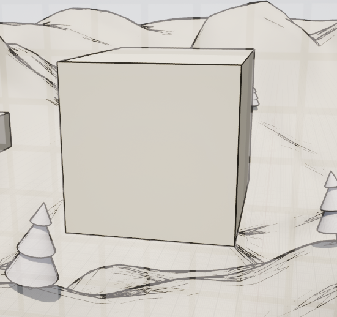
3x3-Block
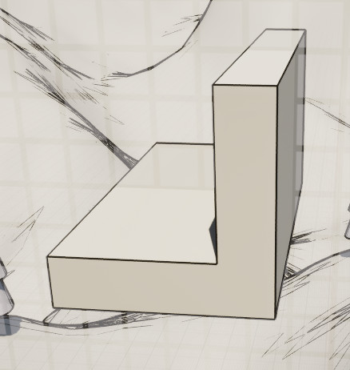
L-Block
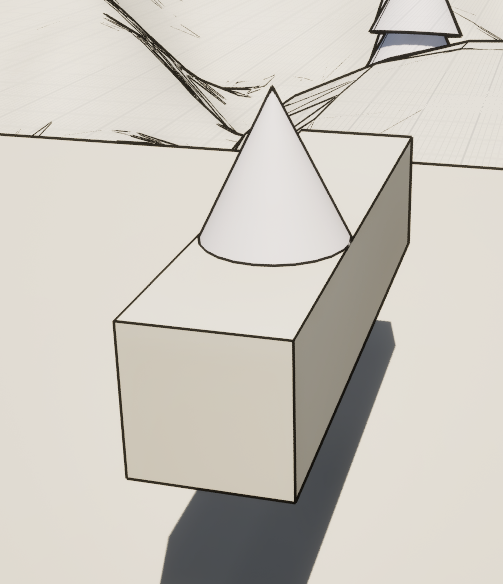
1x1-Block mit Stachel
Hat ein Spieler Kontakt mit dem Stachel dieses Blockes, wird er für die aktuelle Lauf-Runde besiegt!
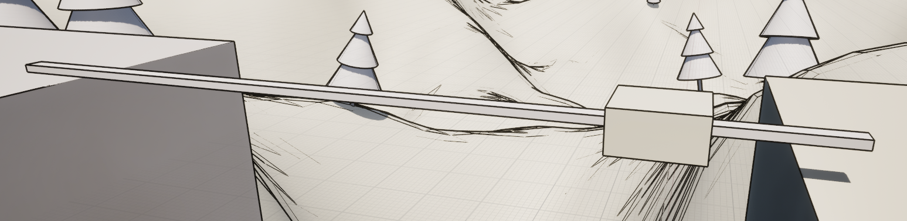
1x2-Block mit Bewegung
Dieser Block bewegt sich zwischen den Endpunkten der Linie hin und her.
Kunst: Multiplayer Prototyp
- Multiplayer Character -
Kurzbeschreibung
In meinem Multiplayer-Prototyp ("My First Online Multiplayer") hatte ich sehr lange Zeit nur Spheren als Spieler-Modell. Dies hat mich irgendwann gestört, deshalb habe ich schnell meinen "Humanoid_Base"-Modell aus dem Tutorial (siehe weiter unten) animiert und in den Multiplayer-Prototyp eingebaut.
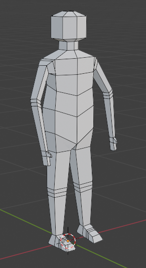
Animation: Untätig
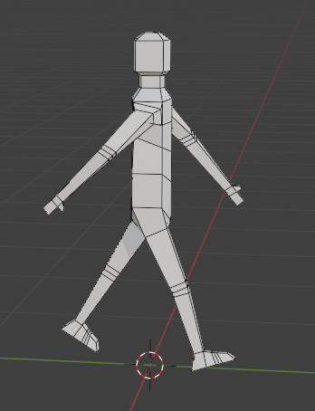
Animation: Gehen
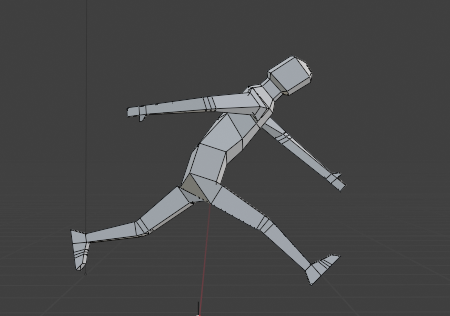
Animation: Sprinten
Herausforderung → Lösungsweg
- Herausforderung: Keine vorherige Multiplayer-Programmier Erfahrung.
- ->Lösung: Youtube Tutorials(Steam Setup: https://www.youtube.com/watch?v=5nMKEKV0acI&t=434s ; Replication-Basics: https://www.youtube.com/watch?v=bBK8A-mFH-s&t=1589s)
Learnings
- Online-Verbindung über Steam einzurichten geling mir sehr einfach.
- Grundbasis der Replikation verstanden (Welche Funktionen müssen auf dem Server ausgeführt werden, welche können auf dem Client ausgeführt werden, usw.)
- Ein Multiplayer Spiel zu programmieren ist zwar etwas anspruchsvoller, aber auch deutlich spaßiger. Bereits nach kurzer Zeit hat sich dieser Prototyp, im Vergleich zu meinen anderen Projekten, wie etwas komplett anderes angefühlt und mir viel Spaß gemacht.
Downloads / Links / Screenshots
Keine Downloads/Links vorhanden. Kommt vielleicht bald!
MORE ← Zurück zum Portfolio